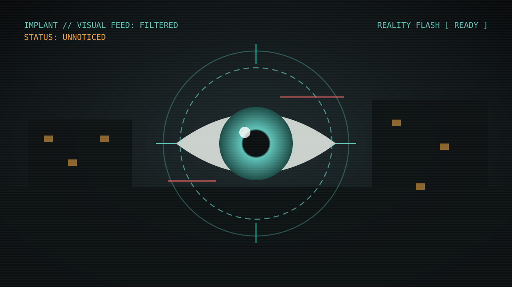

Project Implant working title
A first-person psychological horror game set in a post-Soviet apartment block. An implant in your eye decides what you see, and the things hunting you are invisible. The core design question: how do you make stealth against invisible enemies feel fair?
- My role
- Original concept & pitch, game design (GDD), stealth & detection design
- Team
- 15 students: developers, artists, designers
- Engine
- Unity · first person · made for headphones
- Status
- In development · Minor GD&D 2026–27

Your HUD is not on your side (or is it?)
I pitched the concept to the team: the player character has an implant with a talking AI that filters what they see. With the filter on, the world looks like propaganda: clean, bright, too good. Underneath is the real building: decayed, dangerous, and occupied.
| Propaganda view (implant filter) | Reality | |
|---|---|---|
| World | Polished, cheerful, "too good" | Decay, traces, the truth |
| Enemies | Invisible | Visible |
| HUD | Objectives, health, status. Mostly truthful, with a few scripted lies | No objective help |
| What you find | The path the implant wants you on | Weapons & ammo, hidden passages, environmental puzzle clues |
After the first pitch we discussed the concept as a team and changed it in a few rounds. We dropped an idea where subtitles would lie and kept the HUD mostly honest, with scripted lies only. The interface stays reliable enough to play with, so the few moments it lies actually land.
From "take the eye out" to a reality flash
The first version had the player physically take the implant out: a 3–4 second animation with very limited movement, and the same again to put it back. It was strong as horror (you're vulnerable while you do it), but in a stealth game it became a problem. A long, locked toggle punishes the player for exactly the action the game wants them to take.
We replaced it with a reality flash: a short pulse that cuts through the filter and shows the real building, including the enemies. Now seeing reality is a timing decision instead of a menu-like state switch, and it fits the moment-to-moment rhythm of sneaking.
Before: toggle
3–4 s take-out animation, limited movement. Strong dread, slow pacing. It fought the stealth loop.
After: reality flash
A short reveal you choose when to use. It keeps the tension of not seeing, without taking control away.
Design rule
Some sections lock you in one view on purpose. A set piece where you can't look at reality creates fear without combat.
A detection model for enemies you can't see
If enemies are invisible, the player needs other information channels. I designed detection around sound first, HUD second, and a short grace window before you get punished.
- Audio is the main sense. Patrols are audible, and the game is designed for headphones so direction can be read.
- The HUD shows the enemy's attention, not its position. You know that you're being watched, not where from. That keeps the enemies invisible while giving fair warning.
- The chase reveals the enemy. Once you're chased, the enemy glitches into view. Running away is about movement and space, not guessing.
- The ~2 second window is a tuning value. It may be too harsh and will be tuned in playtests.
The corner problem
The hardest fairness case: a corner. The player can't see around it, but an invisible enemy right behind it can spot them at very short range. The grace window doesn't help when you walk straight into someone.
Option I rejected
Casting light (a view cone) where enemies are looking would solve it, but it gives away the enemy's position and breaks the core fantasy of enemies you can't see. Fair, but no longer this game.
What I'm going with: solve it in the level, not in the HUD
- Rounded instead of hard corners, so sight lines open gradually for both sides.
- Patrol routes never run directly along a corner, the one spot where you could be caught at point-blank range.
- Overview first: when the player enters a new space, they first get a vantage point over the whole room, so they can plan with flashes and sound before committing.
Takeaway: some fairness problems are better solved with geometry and authoring rules than with more UI. The level designers get a short, checkable rule list instead of a new mechanic.
Weak on purpose
Combat is inspired by classic survival horror: possible, but discouraged. Weak enemies can be killed (with effort). The big creature can only be staggered. Weapons are found only by looking through to reality, but they can be used in both views, and work better in reality. Fighting is always a trade-off against staying hidden.
Planned structure for the vertical slice (15–20 minutes): an example level built around the stealth loop, dream/hallucination sequences, a locked-view set piece with an unseen creature you can't kill, and a boss encounter with multiple endings.
Open design questions
- Flash economy: cooldown, charges or a cost (battery, noise, attention)?
- Is ~2 seconds of "being looked at" readable enough, or too harsh? This will be tuned through playtests.
- Story direction: is the implant a manipulator, or an "all in the head" helper for a traumatised character?
This page will be updated with gameplay footage and playtest results as the project develops.
Project Implant werktitel
Een first-person psychologische horrorgame in een post-Sovjet flatgebouw. Een implantaat in je oog bepaalt wat je ziet, en de wezens die op je jagen zijn onzichtbaar. De centrale ontwerpvraag: hoe maak je stealth tegen onzichtbare vijanden eerlijk?
- Mijn rol
- Oorspronkelijk concept & pitch, game design (GDD), stealth- & detectieontwerp
- Team
- 15 studenten: developers, artists, designers
- Engine
- Unity · first person · gemaakt voor koptelefoon
- Status
- In ontwikkeling · Minor GD&D 2026–27
Je HUD staat niet aan jouw kant (of toch wel?)
Ik pitchte het concept aan het team: het personage heeft een implantaat met een pratende AI die filtert wat hij ziet. Met het filter aan ziet de wereld eruit als propaganda: schoon, helder, te mooi. Daaronder zit het echte gebouw: vervallen, gevaarlijk en bewoond.
| Propaganda-weergave (implantaatfilter) | Realiteit | |
|---|---|---|
| Wereld | Gepolijst, vrolijk, "te mooi" | Verval, sporen, de waarheid |
| Vijanden | Onzichtbaar | Zichtbaar |
| HUD | Doelen, gezondheid, status. Grotendeels eerlijk, met een paar gescripte leugens | Geen hulp bij doelen |
| Wat je vindt | Het pad waar het implantaat je wil hebben | Wapens & munitie, verborgen doorgangen, aanwijzingen voor omgevingspuzzels |
Na de eerste pitch hebben we het concept als team besproken en in een paar rondes aangepast. We schrapten een idee waarin ondertitels zouden liegen, en hielden de HUD grotendeels eerlijk, met alleen gescripte leugens. De interface blijft betrouwbaar genoeg om mee te spelen, zodat de paar momenten waarop hij liegt echt binnenkomen.
Van "het oog eruit halen" naar een reality flash
In de eerste versie haalde de speler het implantaat fysiek uit zijn oog: een animatie van 3–4 seconden met heel beperkte beweging, en hetzelfde om het terug te plaatsen. Als horror was dat sterk (je bent kwetsbaar terwijl je het doet), maar in een stealthgame werd het een probleem. Een lange, vergrendelde wissel straft de speler voor precies de actie die de game van ze vraagt.
We vervingen het door een reality flash: een korte puls die door het filter heen snijdt en het echte gebouw laat zien, inclusief de vijanden. De realiteit zien is nu een timingkeuze in plaats van een menu-achtige schakelaar, en het past bij het ritme van sluipen.
Eerst: schakelaar
Animatie van 3–4 s, beperkte beweging. Sterke angst, traag tempo. Het botste met de stealth-loop.
Nu: reality flash
Een korte onthulling die je zelf timet. De spanning van niet-zien blijft, zonder dat je de controle kwijtraakt.
Ontwerpregel
Sommige stukken houden je bewust in één weergave. Een set piece waarin je de realiteit niet kunt zien, maakt angst zonder gevecht.
Een detectiemodel voor vijanden die je niet ziet
Als vijanden onzichtbaar zijn, heeft de speler andere informatiekanalen nodig. Ik ontwierp de detectie rond eerst geluid, dan de HUD, met een korte respijtperiode voordat je gestraft wordt.
- Geluid is het belangrijkste zintuig. Patrouilles zijn hoorbaar, en de game is ontworpen voor een koptelefoon zodat je de richting kunt horen.
- De HUD toont de aandacht van de vijand, niet zijn positie. Je weet dat je bekeken wordt, niet vanaf waar. Zo blijven vijanden onzichtbaar en krijg je toch een eerlijke waarschuwing.
- De achtervolging onthult de vijand. Zodra je achtervolgd wordt, glitcht de vijand in beeld. Vluchten draait om beweging en ruimte, niet om gokken.
- Het venster van ~2 seconden is een tuningwaarde. Het is misschien te streng en wordt in playtests afgesteld.
Het hoekprobleem
Het lastigste eerlijkheidsgeval: een hoek. De speler kan er niet omheen kijken, maar een onzichtbare vijand vlak erachter kan hem van heel dichtbij spotten. Het respijt helpt niet als je recht tegen iemand aan loopt.
Optie die ik afwees
Licht (een kijkkegel) laten schijnen waar vijanden kijken zou het oplossen, maar dat verraadt de positie van de vijand en breekt de kernfantasie van vijanden die je niet ziet. Eerlijk, maar niet meer deze game.
Waar ik voor kies: het oplossen in het level, niet in de HUD
- Afgeronde in plaats van harde hoeken, zodat zichtlijnen voor beide kanten geleidelijk openen.
- Patrouilleroutes lopen nooit direct langs een hoek, de enige plek waar je van heel dichtbij gepakt kunt worden.
- Eerst overzicht: als de speler een nieuwe ruimte binnenkomt, krijgt hij eerst een uitkijkpunt over de hele kamer, zodat hij met flashes en geluid kan plannen voordat hij instapt.
Les: sommige eerlijkheidsproblemen los je beter op met geometrie en bouwregels dan met meer UI. De level designers krijgen een korte, controleerbare regellijst in plaats van een nieuwe mechaniek.
Bewust zwak
De gevechten zijn geïnspireerd op klassieke survival horror: mogelijk, maar ontmoedigd. Zwakke vijanden zijn te verslaan (met moeite). Het grote wezen kun je alleen laten wankelen. Wapens vind je alleen door naar de realiteit te kijken, maar je kunt ze in beide weergaves gebruiken, en ze werken beter in de realiteit. Vechten is altijd een afweging tegen verborgen blijven.
Geplande opbouw van de vertical slice (15–20 minuten): een voorbeeldlevel rond de stealth-loop, droom- en hallucinatiesequenties, een set piece in een vergrendelde weergave met een onzichtbaar wezen dat je niet kunt doden, en een bossgevecht met meerdere eindes.
Open ontwerpvragen
- Flash-economie: cooldown, ladingen of een kostprijs (batterij, geluid, aandacht)?
- Is ~2 seconden "bekeken" leesbaar genoeg, of te streng? Dat wordt in playtests getuned.
- Verhaalrichting: is het implantaat een manipulator, of een helper die "alles in het hoofd" van een getraumatiseerd personage zit?
Deze pagina wordt aangevuld met gameplaybeelden en playtest-resultaten naarmate het project vordert.